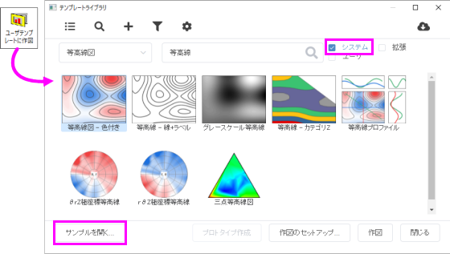

FAQ-1179 Originの組み込みグラフテンプレートのデータ要件を確認するにはどうしたらよいでしょうか？
Build-In-Graph-Template-Data-Requirement
最終更新日：2023/6/12
各グラフタイプのヘルプドキュメントを確認する以外に、あるグラフタイプのデータ要件を直観的に確認するために、テンプレートライブラリのサンプルプロジェクトを使用できます。テンプレートライブラリでは全ての組み込みグラフテンプレートのサンプルプロジェクトが提供されています。
- 作図: ユーザテンプレートに作図メニューを選択します。
- テンプレートライブラリでは、
- カテゴリを選択およびキーワードを入力して確認したいグラフテンプレートを探します。
- システムチェックボックスにチェックを付け、ほかの2つのチェックは外します。
- サンプルグラフをクリックして選択し、サンプルを開く...ボタンをクリックしてサンプルプロジェクトを開きます。
- 
- サンプルプロジェクトが開いたら、ソースワークブックまたは行列ブックを確認してこのグラフタイプに適したデータ構造を確認できます。
Note: 複数のデータ構造からプロットできるグラフタイプの場合、サンプルプロジェクトでは、すべてのデータ構造のサンプルがサブフォルダごとにリストされます。たとえば、等高線図はXYZワークシートデータ、行列、仮想行列から作成でき、サンプルプロジェクトでは、それぞれ3つのサブフォルダで表示されます。
キーワード:データ要件, データ構造, データ配列, グラフテンプレート, グラフタイプ, 入力データ形式, ソースデータタイプ